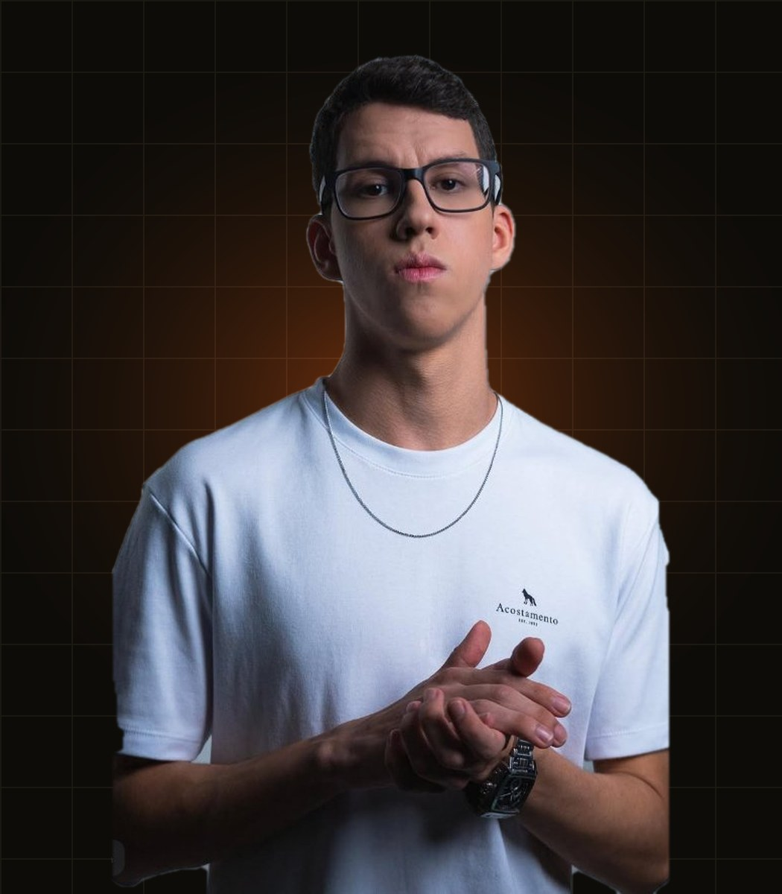

Comanda Nº 001CZ48
Bianka
Afro House
A Cozinha 48 é um hub criativo onde música eletrônica, gastronomia e audiovisual se encontram na mesma bancada. A ideia nasceu simples: transformar uma cozinha de verdade em palco — enquanto o set rola, um prato nasce logo ao lado.
Mas a gente vai além da festa: somos a base de quem tá começando. Cuidamos de identidade visual, redes sociais, produção de conteúdo e agenda de shows pros artistas da casa.
E não ficamos só na cozinha — levamos nossa energia pra bares, restaurantes e eventos, em colabs que valorizam o público e os parceiros.
No Resenha 48, nosso podcast, sentamos com DJs, chefs e convidados pra conversar sobre carreira, bastidores e inspirações.
No fim, é isso: a família Cozinha 48 junta música, imagem e experiência pra dar voz a novos talentos e transformar cada projeto em algo memorável.



← arraste pro lado pra ver todos →
▶ No ar: a playlist COZINHA 48 — DJ Sets — clique numa miniatura abaixo pra trocar o set
Carregando os últimos sets…
Por enquanto os pedidos são fechados pelo WhatsApp — troque o número 5518900000000 nos links pelo seu. Quando quiser uma loja com carrinho e pagamento, dá pra integrar com Nuvemshop ou Shopify.